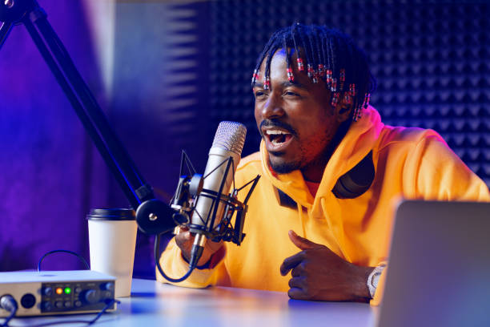
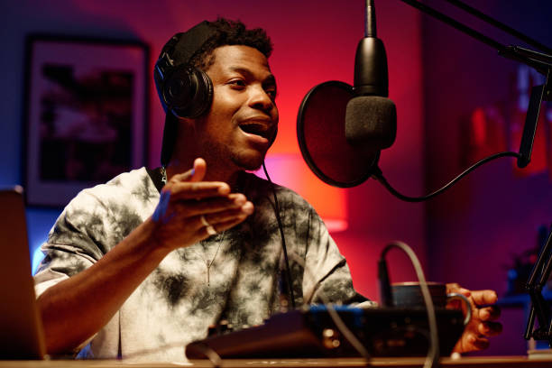

Tshepo Ntlaloe, Radio Presenter at XYZ Radio
Welcome to My Portfolio
Welcome to my personal portfolio. I am John Doe, a professional soccer player.
I have been playing soccer since childhood and turned professional at the age of 19.
I currently play as a forward for City United FC.
My journey has been filled with hard work, discipline, and passion for the game.
I've represented my country in multiple international competitions.
My love for soccer keeps me motivated every day.
This website showcases my journey, skills, and interests outside the field.
Feel free to connect with me through my social media platforms listed here.

My Skills
I specialize in voice modulation, audience interaction, and creating engaging on-air content for diverse audiences.
With strong communication and interviewing skills, I bring guests' stories to life and make listeners feel involved.
Technical knowledge in audio editing, mixing, and live broadcasting allows me to deliver professional quality content.

My Work
I currently host a morning show on XYZ Radio, where I blend music, news, and live interviews into a 3-hour segment.
I’ve covered live events, red carpets, and community outreach programs with enthusiasm and authenticity.
My podcast series "Voices in the Air" dives into industry insights and personal stories from media professionals.

My Hobbies
Outside the studio, I enjoy producing music, exploring new sounds, and learning about audio production trends.
I'm an avid reader of media articles and constantly learning how to improve my craft and inspire others.
I also love mentoring young broadcasters and volunteering at community radio training programs.